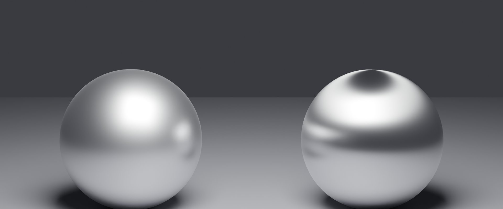
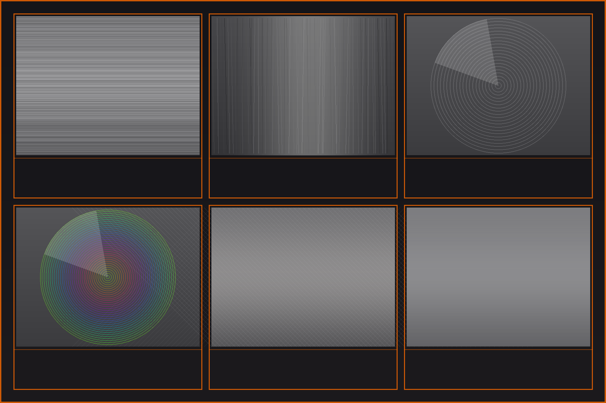
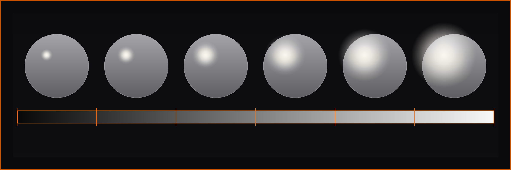

🔬 PBR Materials Explained
Dive deep into the science of Physically Based Rendering—understand the principles that make materials look believable under any lighting condition, and master advanced techniques for creating photorealistic surfaces.
In Lesson 10, you learned to create materials using the Principled BSDF shader. You followed recipes, adjusted parameters, and created a solid material library. But why do those parameter values work? What makes a material "physically based"? And how can understanding the underlying principles help you create even better materials?
This lesson takes you behind the curtain. We're going to explore the physics and mathematics that make PBR rendering work—not because you need to be a physicist, but because understanding these principles gives you superpowers. You'll know why metal should have Metallic = 1.0, why rough surfaces scatter light differently, and why your materials will look correct in any lighting setup.
💡 The Architect vs. Builder Analogy: In Lesson 10, you were a builder following blueprints—you learned to construct materials that work. In this lesson, you become the architect who understands the engineering principles behind the design. Builders can make houses; architects can design solutions for any situation. Both are valuable, but understanding the "why" unlocks creative problem-solving!
Don't worry—we're not diving into heavy math or quantum physics. Instead, we'll explore practical, visual explanations of how light interacts with materials. By the end, you'll think about materials the way professional technical artists do: as predictable, physics-based systems that always behave consistently.
🎓 What You'll Learn
- PBR Fundamentals: What "physically based" actually means and why it matters
- Energy Conservation: The law that governs all realistic materials
- Fresnel Effect: Why reflections change at different angles
- Microfacet Theory: Understanding roughness at microscopic level
- Conductor vs. Insulator: The physics behind metals and non-metals
- Albedo Values: Scientific color ranges for realistic materials
- Advanced Parameters: Subsurface, anisotropy, clearcoat in depth
- Material Validation: How to verify your materials are physically correct
⏱️ Estimated Time: 75-90 minutes
🎯 Project: Validate and improve existing materials using PBR principles
📑 In This Lesson
🌟 What Is Physically Based Rendering?
The term "Physically Based Rendering" (PBR) gets thrown around a lot in 3D graphics, but what does it actually mean? Let's break it down from first principles.

The Core Concept
Physically Based Rendering is a rendering approach that simulates how light actually behaves in the real world, based on the laws of physics. Instead of artistic approximations or "whatever looks good," PBR materials follow measurable, scientifically accurate rules.
🔬 PBR in Simple Terms
Traditional (non-PBR) approach:
- "Let's add a specular highlight here because it looks nice"
- Artists manually paint highlights and adjust reflection strength
- Materials look different under different lighting
- No consistency between different 3D packages
- Requires constant tweaking for each scene
PBR approach:
- "This surface has X roughness, so physics determines where highlights appear"
- Light behavior calculated automatically based on material properties
- Materials look correct under ANY lighting
- Consistent across all PBR renderers (Blender, Unity, Unreal, etc.)
- Set material properties once, works everywhere
💡 The Recipe Analogy: Traditional materials are like cooking "to taste"—a pinch of this, adjust until it looks right. PBR is like baking with precise measurements—1 cup flour, 2 eggs, 350°F for 25 minutes. Following physics means predictable, repeatable results every time!
The Three Pillars of PBR
PBR rendering is built on three fundamental principles:
🏛️ The Three Pillars
- Energy Conservation:
- Light never creates more energy than it receives
- Reflected + Absorbed + Transmitted = 100% of incoming light
- A surface can't be brighter than its light source
- Physically Plausible Material Properties:
- Materials behave like real-world counterparts
- Metals and non-metals follow different rules (Fresnel effect)
- Surface roughness follows measurable patterns
- Accurate Light Behavior:
- Light follows physics: reflection, refraction, absorption
- Indirect lighting (bounces) calculated correctly
- Color bleeding, caustics, subsurface scattering all work naturally
Why PBR Revolutionized 3D Graphics
Before PBR became the standard (around 2010-2014), creating realistic materials was an art form requiring years of experience. Artists needed to know tricks like:
🕰️ Pre-PBR Challenges
- Specular/Glossiness maps: Manually paint where reflections should appear
- Different shaders for each material type: Separate shaders for metal, plastic, skin, etc.
- Lighting-dependent tweaking: Materials needed adjustment for every lighting setup
- No cross-platform consistency: Materials looked different in different engines
- Artistic guesswork: "Does this look realistic?" was subjective
PBR solved these problems by grounding everything in physics:
✅ PBR Benefits
- Unified workflow: One shader (Principled BSDF) for all materials
- Lighting independence: Materials look correct in any environment
- Predictable results: Adjust roughness, see physics-accurate changes
- Industry standard: Materials transfer between Blender, Unity, Unreal, etc.
- Easier to learn: Follow rules instead of memorizing tricks
- Photorealism achievable: Physics-based = reality-matching
PBR Workflows: Metallic/Roughness vs. Specular/Glossiness
There are two main PBR workflows in the industry. Blender uses the Metallic/Roughness workflow by default:
⚖️ PBR Workflow Comparison
| Aspect | Metallic/Roughness (Blender default) | Specular/Glossiness |
|---|---|---|
| Used By | Blender, Unreal Engine, Unity, Substance | Older systems, some engines |
| Metal Control | Metallic value (0 or 1) | Controlled through specular color |
| Surface Smoothness | Roughness (0 = smooth, 1 = rough) | Glossiness (0 = rough, 1 = smooth—inverted!) |
| Advantages | Clearer separation, easier to understand | More flexibility for exotic materials |
| Disadvantages | Less flexible for non-standard materials | Easier to create non-physical materials by mistake |
🎯 Why Metallic/Roughness Won: The metallic/roughness workflow became the industry standard because it naturally prevents physically impossible materials. The binary metallic value (0 or 1) enforces the real-world distinction between conductors and insulators. It's harder to accidentally create "wrong" materials!
What Makes a Material "Physically Based"?
For a material to be truly physically based, it must satisfy these requirements:
✅ PBR Material Checklist
- Energy conserving: Never reflects more light than it receives
- Fresnel accurate: Reflections increase at grazing angles
- Microsurface modeling: Roughness based on microfacet distribution
- Proper albedo ranges: Color values within physically plausible ranges
- Correct metallic behavior: Metals = 1.0, non-metals = 0.0
- IOR accuracy: Refraction follows real material indices
- Consistent across lighting: Looks correct under any illumination
The Principled BSDF shader in Blender is designed to make creating physically accurate materials easy. It handles most of the complex physics automatically, but understanding what's happening under the hood helps you use it masterfully!
PBR in the Real World: Game Engines vs. Renderers
PBR materials work identically whether you're making a film in Blender or a game in Unity/Unreal. That's the power of physics-based approaches:
🎮 PBR Across Industries
- Film/VFX: Cycles, Arnold, V-Ray, RenderMan—full PBR path tracing
- Games: Unity, Unreal Engine—real-time PBR approximations
- Product Viz: KeyShot, Solidworks—PBR for CAD visualization
- AR/VR: All platforms use PBR for consistent, believable materials
The universal language: A PBR material created in Substance can be used in Blender, then exported to Unity, and it will look correct in all three! The parameters (metallic, roughness, base color) mean the same thing everywhere.
The Math Behind PBR (Conceptual Overview)
You don't need to memorize equations, but it helps to know what calculations are happening:
🧮 PBR Mathematical Foundation
BRDF (Bidirectional Reflectance Distribution Function):
- Mathematical function describing how light bounces off a surface
- Takes into account incoming light direction and viewing direction
- Outputs the amount and color of reflected light
- Principled BSDF implements multiple BRDFs for different surface types
Key equations PBR shaders solve:
- Fresnel equations: Calculate reflection strength at angles
- Microfacet models: Simulate rough surfaces statistically
- Energy conservation: Ensure diffuse + specular ≤ 100%
- Cook-Torrance: Industry-standard specular reflection model
💡 Don't Worry About the Math: Blender's Principled BSDF does all these calculations for you! Understanding the concepts (Fresnel, microfacets, energy conservation) is what matters for creating great materials. The shader handles the equations automatically.
⚡ Energy Conservation: The Golden Rule
Energy conservation is the most fundamental principle in PBR. It's so important that if you understand this one concept, you'll already be ahead of 80% of beginners. Let's explore what it means and why it matters.
The Law of Energy Conservation
In physics, energy conservation states that energy cannot be created or destroyed—only converted from one form to another. In rendering, this translates to a simple rule:
🎯 The Golden Rule of PBR
A surface can never reflect more light energy than it receives.
This seems obvious, but it has profound implications for how we create materials. Let's break down what happens when light hits a surface:
💡 The Water Bucket Analogy: Imagine pouring 1 liter of water into a bucket with holes. Some water stays in the bucket (diffuse reflection), some splashes out immediately (specular reflection), some leaks through holes (transmission), and some soaks into the bucket material (absorption). The total water that comes out can never exceed 1 liter—you can't get 1.5 liters out if you only poured in 1 liter!
Energy Distribution in Materials
When light hits a material, the incoming energy must be distributed among different interactions. Here's how it works for different material types:
📊 Energy Budget Examples
Rough Matte Surface (Roughness = 0.9):
- Diffuse reflection: 70%
- Specular reflection: 5%
- Absorption: 25%
- Total: 100% ✅
Glossy Plastic (Roughness = 0.2):
- Diffuse reflection: 30%
- Specular reflection: 50%
- Absorption: 20%
- Total: 100% ✅
Polished Metal (Metallic = 1.0, Roughness = 0.1):
- Diffuse reflection: 0% (metals don't have diffuse!)
- Specular reflection: 95%
- Absorption: 5%
- Total: 100% ✅
Clear Glass (Transmission = 1.0):
- Specular reflection: 4-8% (Fresnel reflection)
- Transmission: 92-96%
- Absorption: 0% (for perfectly clear glass)
- Total: 100% ✅

How Principled BSDF Enforces Energy Conservation
The genius of the Principled BSDF shader is that it automatically maintains energy conservation. You can't accidentally create non-physical materials. Here's how:
🛡️ Automatic Energy Conservation
- Diffuse/Specular Balance: As specular reflection increases (lower roughness), diffuse automatically decreases. The shader calculates this balance.
- Metallic Override: When Metallic = 1.0, diffuse reflection is set to zero automatically. Metals only have specular reflection.
- Transmission Compensation: When Transmission increases, both diffuse and specular reflection decrease proportionally.
- Fresnel Integration: Reflection strength automatically adjusts based on viewing angle, maintaining energy conservation at all angles.
🎯 The Safety Net: This is why you can adjust Principled BSDF parameters freely and always get physically plausible results. The shader is constantly rebalancing the energy budget behind the scenes. It's mathematically impossible to break energy conservation with this shader!
Breaking Energy Conservation: What NOT to Do
While Principled BSDF protects you, it's still possible to create non-physical materials if you use legacy shaders or make certain mistakes. Here are the pitfalls:
⚠️ Energy Conservation Violations
Problem 1: Adding Light That Doesn't Exist
- Wrong: Using Add shader to combine multiple reflection layers without proper balancing
- Result: Surface reflects 150% of incoming light—physically impossible!
- Right: Use Mix Shader with proper factor, or stick with Principled BSDF
Problem 2: Emission Without Energy Source
- Wrong: Adding emission just to make something brighter without considering it's generating light
- Result: Objects mysteriously glow without energy source
- Right: Use emission only for actual light sources (screens, LEDs, bulbs)
Problem 3: Combining Incompatible Shaders
- Wrong: Mixing Glossy + Diffuse at 100% each
- Result: 200% energy output
- Right: Mix with factors that add to 1.0, or use Principled BSDF which handles this
The Relationship Between Roughness and Energy
Roughness doesn't change the total amount of reflected energy—it changes how that energy is distributed:
🔬 Roughness and Energy Distribution
| Roughness | Energy Distribution | Visual Result |
|---|---|---|
| 0.0 (Smooth) | All specular energy in one direction (mirror reflection) | Sharp, bright highlight |
| 0.3 (Glossy) | Specular energy spread over small cone of directions | Soft, noticeable highlight |
| 0.6 (Satin) | Specular energy spread over wide cone | Very soft, diffuse-looking highlight |
| 1.0 (Rough) | Specular energy spread in all directions (becomes diffuse-like) | Almost no visible highlight |
Key insight: Smooth surfaces concentrate the same amount of energy into a smaller area (bright spot). Rough surfaces spread that same energy over a larger area (dim, spread out). Total energy remains constant!

Albedo and Energy Conservation
The base color (albedo) of a material determines how much light is absorbed vs. reflected as diffuse:
🎨 Albedo Energy Implications
- White (RGB 1.0, 1.0, 1.0): Reflects ~100% of diffuse light, absorbs ~0%
- Medium Gray (RGB 0.5, 0.5, 0.5): Reflects ~50%, absorbs ~50%
- Black (RGB 0.0, 0.0, 0.0): Reflects 0%, absorbs 100%
- Pure Red (RGB 1.0, 0.0, 0.0): Reflects 100% of red light, absorbs 100% of green/blue
Critical rule: Albedo can never be brighter than 1.0 (pure white) because that would mean reflecting more than 100% of light!
Why Energy Conservation Matters for Artists
Understanding energy conservation has practical benefits for your work:
✅ Practical Benefits
- Materials work in any lighting:
- Energy-conserving materials respond correctly to bright sun, dim interior, or neon lights
- No need to adjust materials for different scenes
- Predictable render results:
- Know exactly how bright surfaces will be
- No mysterious "too bright" or "too dark" surprises
- Faster iteration:
- Don't waste time fighting non-physical materials
- Parameters work intuitively
- Professional quality:
- Energy-conserving materials look "right" even to untrained eyes
- Matches expectations from photos and real life
- Cross-platform consistency:
- Materials export correctly to game engines
- Same material works in Eevee and Cycles
Testing Energy Conservation
Want to verify if a material conserves energy? Here are some quick tests:
🧪 Energy Conservation Tests
- The White Room Test:
- Place material in pure white environment (HDRI)
- With pure white lighting, material should never appear brighter than white
- If material glows brighter than the environment, energy conservation is violated
- The Roughness Sweep:
- Animate roughness from 0.0 to 1.0
- Overall brightness should stay relatively constant
- Only the distribution of light should change
- The Metallic Check:
- Set material to white base color
- Set Metallic to 1.0
- Material should reflect environment without visible base color
- No diffuse component should be visible

Advanced: Multiple Scattering and Energy
In reality, light can bounce multiple times within a rough surface before exiting. This is called multiple scattering:
🔄 Multiple Scattering
What happens:
- Light enters material through microscopic valleys
- Bounces between microfacets multiple times
- Eventually exits in a different direction
- Each bounce absorbs some energy (based on albedo)
Why it matters:
- Without multiple scattering, rough dark materials appear too dark
- Cycles renderer simulates this automatically
- Eevee approximates it (less accurate but faster)
- Energy is still conserved—just distributed more realistically
💡 The Cave Analogy: Imagine light entering a cave. If the cave has rough, dark walls, light bounces multiple times, losing energy with each bounce, before finding its way back out. A simple model might assume light bounces once and exits—but multiple scattering accounts for all those extra bounces, giving more realistic results for rough materials.
Energy Conservation Workflow Tips
✅ Best Practices
- Trust Principled BSDF: It handles energy conservation automatically—don't second-guess it
- Avoid mixing legacy shaders: Glossy + Diffuse combinations can break conservation if not done carefully
- Use emission thoughtfully: Only for actual light-emitting objects
- Keep albedo in physical ranges: 0.02 to 0.95 for most materials
- Test materials in neutral lighting: White environment reveals energy issues clearly
- When in doubt, measure real materials: Use reference photos and color pickers
💎 The Fresnel Effect Explained
The Fresnel effect (pronounced "freh-NELL") is one of the most important phenomena in realistic rendering, yet it's often misunderstood. Named after French physicist Augustin-Jean Fresnel, this effect explains why reflections change based on viewing angle—and why it's critical for believable materials.
What Is the Fresnel Effect?
The Fresnel effect describes how the amount of light reflected from a surface depends on the angle at which you view it. Here's the key insight:
🎯 The Fresnel Principle
All materials become more reflective at grazing angles (when viewed from the side).
Even matte, non-metallic surfaces show mirror-like reflections when viewed at shallow angles!
💡 The Lake Analogy: Stand at the edge of a lake and look straight down into the water—you can see fish and rocks below (low reflection, high transmission). Now look across the lake toward the horizon—the surface becomes a mirror, reflecting the sky perfectly (high reflection, low transmission). Same water, different angle, completely different appearance. That's Fresnel!

Fresnel in Everyday Life
You see the Fresnel effect constantly, even if you've never noticed it consciously:
👁️ Real-World Fresnel Examples
- Glass windows: Look straight through—almost no reflection. Look at an angle—strong mirror-like reflection
- Car paint: Top of the hood (viewed perpendicular) shows color. Side of the car (viewed at angle) shows strong reflections
- Water surfaces: Looking down into a pool vs. looking across a lake
- Your phone screen: Straight on—see the display. At an angle—see reflections of lights
- Polished wood floor: Under your feet—matte wood color. Distance across room—glossy reflections
- Even skin: Your face straight on vs. the edge of your cheek in a mirror—edge is more reflective!
The Science Behind Fresnel
At the microscopic level, Fresnel reflections are governed by the electromagnetic properties of materials and the wave nature of light. But we can understand it visually:
🔬 Why Fresnel Happens
Perpendicular viewing (head-on):
- Light rays hit surface nearly vertically
- Light can easily penetrate the material
- Small percentage reflects back
- Most light enters the material (transmission or scattering)
Grazing angle viewing (from side):
- Light rays hit surface at shallow angle
- Light has difficulty penetrating—like skipping a stone on water
- Large percentage reflects back
- Less light enters the material
Fresnel for Dielectrics vs. Conductors
The Fresnel effect behaves differently for non-metals (dielectrics) and metals (conductors):
⚖️ Dielectric vs. Conductor Fresnel
| Viewing Angle | Dielectrics (Metallic = 0) | Conductors (Metallic = 1) |
|---|---|---|
| Perpendicular (0°) | ~4-8% reflection (specular) Base color visible (diffuse) |
60-95% reflection Tinted by base color NO diffuse component |
| 45° angle | ~10-20% reflection Base color still dominant |
70-98% reflection Base color tint visible |
| Grazing (85-90°) | ~100% reflection Becomes mirror-like Base color disappears |
~100% reflection Mirror-like |
🎯 Key Difference: Non-metals have dramatic Fresnel effect (4% → 100% reflection). Metals have subtle Fresnel effect (already 70%+ → 100%). This is why edge highlights look so different on plastic vs. metal!
The Fresnel Equations
For the curious, here's what Principled BSDF calculates behind the scenes:
🧮 Fresnel Mathematics (Simplified)
The Schlick Approximation:
Most PBR shaders use Schlick's approximation of Fresnel equations:
- F = F₀ + (1 - F₀) × (1 - cos θ)⁵
- F₀ = Base reflectivity at perpendicular angle (depends on IOR)
- θ = Angle between view direction and surface normal
- (1 - cos θ)⁵ = The Fresnel curve—how quickly reflectivity increases
What this means practically:
- F₀ for non-metals: ~0.04 (4% reflection straight on)
- F₀ for metals: ~0.7-0.95 (70-95% depending on metal type)
- At 90° (grazing angle), F approaches 1.0 (100%) for all materials
Don't worry about memorizing the equation! The important takeaway: Fresnel is automatic in Principled BSDF. The shader handles all this math for you.
IOR and Fresnel Strength
The Index of Refraction (IOR) directly controls the strength of Fresnel reflections for dielectrics:
🔍 IOR and Reflection Strength
| Material | IOR | Perpendicular Reflection (F₀) |
|---|---|---|
| Air | 1.0 | 0% (reference) |
| Water | 1.33 | ~2% |
| Plastic | 1.45 | ~3.5% |
| Glass | 1.5 | ~4% |
| Crystal | 1.7 | ~6.5% |
| Diamond | 2.42 | ~17% |
Notice how higher IOR materials have stronger perpendicular reflections—but at grazing angles, all still approach 100%!
The Specular Parameter and Fresnel
In Principled BSDF, the Specular parameter controls Fresnel effect strength. Here's what it actually does:
✨ Specular Parameter Explained
- Default: 0.5 → Corresponds to IOR ~1.5 (typical glass/plastic)
- Range: 0.0 to 1.0 → Scales the Fresnel effect strength
- Specular = 0.0: No Fresnel (unrealistic, but useful for special effects)
- Specular = 0.5: Standard dielectric Fresnel (most materials)
- Specular = 1.0: Stronger Fresnel (high IOR materials like diamond)
Critical note: For 99% of materials, leave Specular at 0.5! It's rare to need adjustment.
💡 Common Mistake: Beginners often adjust Specular thinking it controls "shininess." It doesn't—that's what Roughness does! Specular controls the Fresnel effect strength, which should match the material's real-world IOR. Adjusting it incorrectly makes materials look wrong at grazing angles.
Fresnel and Material Realism
The Fresnel effect is what makes materials look "right" to our eyes. Without it, materials appear flat and fake:
👁️ Fresnel Impact on Realism
With correct Fresnel:
- Edge highlights appear naturally on all materials
- Materials have visual "structure" and depth
- Viewing angle creates natural variation
- Matches real-world expectations from photos
- Materials integrate naturally with environment
Without Fresnel (or incorrect Fresnel):
- Materials look "flat" and CG-like
- No natural edge highlights
- Appears the same from all viewing angles
- Uncanny valley effect—"something's off"
- Looks like video game graphics from 2000s
Observing Fresnel in Practice
Let's do a quick exercise to train your eye to see Fresnel effects:
✅ Fresnel Observation Exercise
- Find a glossy object near you (phone, mug, book cover, anything with slight shine)
- Look at it straight on: Notice you can see the surface color/texture clearly
- Tilt it slowly: Watch how reflections become stronger as you view at shallower angle
- At extreme angle: Surface becomes almost mirror-like, color disappears
- Repeat with different objects: Notice same pattern on matte surfaces (just less obvious)
- Try with transparent materials: Glass, water—see how transparency decreases at angles
Insight gained: Once you see Fresnel in real life, you'll never miss it in 3D renders. Your eye is trained!
Fresnel and Roughness Interaction
Fresnel and roughness work together to create realistic materials. Here's how they interact:
🔄 Fresnel × Roughness = Material Character
Smooth Surface (Low Roughness):
- Fresnel creates sharp, distinct edge highlights
- Clear transition from base color to reflection
- Edge highlight is bright and concentrated
- Classic "rim lighting" effect
Rough Surface (High Roughness):
- Fresnel still occurs but spread out
- Edge highlight is soft and gradual
- Transition from base color to reflection is blurred
- Less dramatic but still present
Sharp Edge Highlights
Clear Reflections] C --> E[Fresnel Effect:
Soft Edge Glow
Blurred Reflections] D --> F[Result: Glossy Look] E --> G[Result: Matte Look] style A fill:#667eea,stroke:#333,stroke-width:3px,color:#fff style F fill:#4CAF50,stroke:#333,stroke-width:2px style G fill:#4CAF50,stroke:#333,stroke-width:2px
Fresnel for Transparent Materials
Fresnel is especially important for glass and transparent materials. It determines the balance between what you see reflected vs. what you see through the material:
🔍 Fresnel in Glass
Looking straight through glass (perpendicular):
- ~4% reflection (you see slight reflection of yourself)
- ~96% transmission (you see through clearly)
- Transparency dominates
Looking at glass edge (grazing angle):
- ~100% reflection (perfect mirror)
- ~0% transmission (can't see through at all)
- Reflection dominates completely
Why this matters: Realistic glass must transition from mostly transparent (straight on) to completely reflective (edges). Principled BSDF handles this automatically when you set Transmission = 1.0!
Common Fresnel Mistakes
⚠️ Fresnel Pitfalls to Avoid
Mistake 1: Disabling Fresnel completely
- Problem: Setting Specular to 0.0 disables Fresnel
- Result: Materials look flat and fake at all angles
- Fix: Keep Specular at default 0.5 for most materials
Mistake 2: Confusing Specular with shininess
- Problem: Adjusting Specular trying to make material shinier/rougher
- Result: Incorrect Fresnel strength breaks realism
- Fix: Use Roughness for shininess, not Specular
Mistake 3: Forgetting Fresnel exists on matte materials
- Problem: Assuming only shiny materials have edge highlights
- Result: Missing subtle realism in rough materials
- Fix: Remember: ALL materials have Fresnel, just less visible on rough surfaces
Mistake 4: Not testing materials from multiple angles
- Problem: Only viewing material straight-on during creation
- Result: Missing edge cases where Fresnel looks wrong
- Fix: Always rotate around material, check grazing angles
Fresnel Best Practices
✅ Professional Fresnel Workflow
- Trust the defaults: Principled BSDF's Specular 0.5 is correct for 99% of materials
- Let Fresnel work automatically: Don't try to manually control edge highlights
- Use proper IOR values: For transparent materials, correct IOR ensures correct Fresnel
- Test from all angles: Rotate camera around material to verify Fresnel looks natural
- Study reference photos: Notice how edge highlights appear on real materials
- Metallic materials: Fresnel is less dramatic but still present—don't disable it
- Rough materials: Fresnel is subtle but important for realism
🎯 The Automatic Excellence: One of the best things about PBR is that Fresnel "just works" when you use Principled BSDF correctly. You don't need to think about it or manually control it. Set your material properties correctly, and Fresnel makes your materials look realistic automatically at every viewing angle!
🔬 Microfacet Theory and Roughness
When you adjust the Roughness slider in Principled BSDF, you're not just making surfaces "more rough"—you're controlling a sophisticated physical model of surface structure at the microscopic level. This is called microfacet theory, and understanding it will transform how you think about materials.
What Are Microfacets?
No surface is perfectly smooth at the microscopic level. Even polished metal, when magnified thousands of times, shows tiny bumps, valleys, and facets. Microfacet theory models this microscopic roughness:
🔍 The Microfacet Model
Core concept:
- Every surface is made of millions of tiny mirror-like facets
- Each facet is perfectly smooth and reflective
- Facets are oriented in different directions based on roughness
- The distribution of facet orientations determines overall appearance
💡 The Mountain Range Analogy: Imagine viewing a mountain range from an airplane. From a distance, it looks like a rough, matte surface. But zoom in on any individual rock face—it's smooth and reflective. The "roughness" of the mountain range comes from countless smooth surfaces pointing in different directions. That's exactly how microfacet theory works!
Smooth vs. Rough at Microscopic Level
Let's visualize what different roughness values actually mean at the microscopic scale:
📊 Microfacet Distribution by Roughness
Roughness = 0.0 (Perfect Mirror):
- All microfacets aligned in same direction
- Light reflects in single coherent direction
- Result: Sharp, mirror-like reflection
- Example: Perfect mirror, chrome in vacuum
Roughness = 0.2 (Glossy):
- Microfacets mostly aligned, slight variation
- Light reflects in narrow cone of directions
- Result: Soft but visible specular highlight
- Example: Glossy plastic, polished wood, new car paint
Roughness = 0.5 (Satin):
- Microfacets have moderate orientation variation
- Light reflects in wide cone of directions
- Result: Very soft, spread-out highlight
- Example: Satin fabric, brushed metal, eggshell paint
Roughness = 1.0 (Completely Matte):
- Microfacets randomly oriented in all directions
- Light scatters equally in all directions (diffuse)
- Result: No visible specular highlight
- Example: Unfinished clay, chalk, very rough stone
Aligned Microfacets] B --> D[Roughness = 0.5
Varied Microfacets] B --> E[Roughness = 0.9
Random Microfacets] C --> F[Sharp Reflection
Single Direction] D --> G[Soft Reflection
Cone of Directions] E --> H[Diffuse Scattering
All Directions] style A fill:#FFD700,stroke:#333,stroke-width:3px style F fill:#4CAF50,stroke:#333,stroke-width:2px style G fill:#FF9800,stroke:#333,stroke-width:2px style H fill:#F44336,stroke:#333,stroke-width:2px
The Normal Distribution Function (NDF)
The mathematical heart of microfacet theory is the Normal Distribution Function, which describes how microfacets are oriented:
📐 Normal Distribution Function
What it does:
- Describes the statistical distribution of microfacet orientations
- Takes roughness parameter as input
- Outputs probability of finding a microfacet at any given angle
Common NDF models:
- GGX (default in Blender): Long-tailed distribution, realistic highlights
- Beckmann: Older model, sharper falloff
- Phong: Very old, not physically accurate (legacy only)
Why GGX is best: It produces long "tails" in specular highlights that match real-world materials better. Most PBR systems use GGX now.
🎯 Practical Takeaway: You don't need to understand the math! Just know that when you adjust Roughness, Blender is changing the statistical distribution of millions of microscopic mirror facets. The result: physically accurate light scattering that looks correct under any lighting!
Masking and Shadowing
Microfacet theory includes two important phenomena that happen with rough surfaces: masking and shadowing.
🌓 Masking and Shadowing Effects
Shadowing:
- Some microfacets are in shadow cast by neighboring facets
- Light can't reach these shadowed facets
- Reduces overall brightness of rough surfaces
- More pronounced with rough surfaces and grazing angles
Masking:
- Some reflected light is blocked by neighboring microfacets
- Light reflects but can't escape the surface structure
- Also reduces brightness, especially at grazing angles
- Works together with shadowing
Physical accuracy: Principled BSDF accounts for both automatically! This is why rough materials at grazing angles appear darker than you might expect—physics!
Why Rough Surfaces Aren't Just Blurred Reflections
A common misconception: roughness just "blurs" the reflection. Not quite! Let's understand what really happens:
🔍 Roughness vs. Blur
Simple blur (incorrect model):
- Take sharp reflection and apply gaussian blur
- Same brightness, just spread out
- Energy stays constant
- Doesn't account for masking/shadowing
Microfacet model (correct):
- Millions of tiny reflections in different directions
- Energy distributed based on microfacet orientation
- Masking and shadowing reduce total brightness
- Fresnel effect applies to each microfacet individually
- Physically accurate light behavior
This difference is subtle but important. Microfacet-based roughness looks more realistic because it accounts for the physical structure of surfaces, not just image processing tricks.
Roughness and Energy Conservation
Remember energy conservation from earlier? Microfacet theory is how PBR maintains energy conservation across different roughness values:
⚡ Roughness Energy Distribution
Key principle: Total reflected energy remains constant regardless of roughness—only the distribution changes!
| Roughness | Energy Distribution | Perceptual Result |
|---|---|---|
| 0.0 (Smooth) | 100% energy in tiny area | Extremely bright, small highlight |
| 0.3 (Glossy) | 100% energy spread over medium area | Bright but softer highlight |
| 0.7 (Satin) | 100% energy spread over large area | Dim, very soft highlight |
| 1.0 (Matte) | 100% energy spread over entire hemisphere | No visible highlight, appears diffuse |
The tradeoff: Smooth surfaces = bright but small. Rough surfaces = dim but large. Same total energy!
Anisotropic Roughness
So far we've discussed isotropic roughness (same in all directions). But some materials have directional roughness—anisotropy:
↔️ Anisotropic Materials
What is anisotropy?
- Microfacets aligned in one direction more than others
- Created by directional manufacturing processes
- Produces elongated, streaked highlights
Real-world examples:
- Brushed metal: Sanding/brushing creates directional micro-grooves
- Hair/fur: Strands have directional structure
- Vinyl records: Circular grooves create circular highlights
- Satin fabric: Woven threads create directional sheen
- CDs/DVDs: Microscopic tracks create rainbow patterns
In Principled BSDF:
- Anisotropic parameter: 0.0 = isotropic, 1.0 = fully directional
- Anisotropic Rotation: Controls direction of the effect (0-1 = 0-360°)
- Creates elliptical instead of circular highlights


Roughness in Practice: Common Values
Having theoretical knowledge is great, but what roughness values should you actually use? Here's a practical guide:
🎯 Practical Roughness Reference
| Roughness Range | Material Examples | Visual Characteristics |
|---|---|---|
| 0.0 - 0.1 | Mirrors, chrome, polished silver, water surface, new car clear coat | Sharp reflections, bright tight highlights |
| 0.1 - 0.2 | Polished gold, glossy plastic, varnished wood, gloss paint | Clear reflections with slight softness |
| 0.2 - 0.4 | Satin paint, polished stone, semi-gloss finish, smartphone screens | Visible but soft highlights |
| 0.4 - 0.6 | Brushed metal, eggshell paint, worn wood, leather | Very soft, spread highlights |
| 0.6 - 0.8 | Flat paint, unfinished wood, paper, fabric, rough plastic | Barely visible highlights |
| 0.8 - 1.0 | Chalk, rough stone, clay, matte rubber, very rough concrete | Completely diffuse, no highlights |

Roughness Maps: Varying Roughness Across Surface
In real life, roughness often varies across a surface. This is where roughness maps (textures) come in:
🗺️ Roughness Mapping
Concept:
- Grayscale image where brightness = roughness value
- Black (0.0) = smooth areas
- White (1.0) = rough areas
- Gray values = intermediate roughness
Real-world applications:
- Worn surfaces: Edges and high-traffic areas more polished (darker) than recessed areas
- Dirty materials: Dirt/grime in crevices increases roughness
- Weathered metal: Rust patches are rougher than bare metal
- Painted wood: Paint cracks expose rougher wood underneath
Workflow: We'll cover roughness mapping in detail in Lessons 12-14 when we dive into texturing!
Common Roughness Mistakes
⚠️ Roughness Pitfalls
Mistake 1: Everything is too glossy (Roughness too low)
- Problem: Beginners often default to Roughness 0.1-0.2 for everything
- Result: Scene looks like shiny plastic toy world
- Fix: Most real materials are Roughness 0.3-0.7. Be generous with roughness!
Mistake 2: Everything is perfectly uniform
- Problem: Using single roughness value across entire object
- Result: Looks CG and fake—real materials have variation
- Fix: Add slight roughness variation (we'll learn with textures)
Mistake 3: Confusing Roughness with other parameters
- Problem: Adjusting Metallic or Specular thinking it controls shininess
- Result: Wrong material type or incorrect Fresnel
- Fix: Roughness controls shininess. Metallic controls metal vs. non-metal. Specular controls Fresnel strength.
Mistake 4: Not testing under different lighting
- Problem: Material looks right in one HDRI but wrong in others
- Result: Roughness might be incorrect if it only works in specific lighting
- Fix: Test materials in multiple HDRIs (bright, dim, colored)
Advanced: Roughness and Render Performance
Interestingly, roughness affects render performance in path tracers like Cycles:
⚡ Roughness Performance Considerations
Smooth surfaces (Low roughness):
- Faster to render
- Light bounces in predictable directions
- Less noise in renders
- Fewer samples needed for clean result
Rough surfaces (High roughness):
- Slower to render
- Light scatters in many directions (requires more ray samples)
- More noise in renders
- More samples needed for clean result
Optimization tip: If render times are long, check if you have unnecessarily rough materials. Sometimes Roughness 0.6 looks identical to 0.8 but renders faster!
Roughness Best Practices
✅ Professional Roughness Workflow
- Start with reference: Look at photos of real materials to judge roughness accurately
- Use middle range as baseline: Start at Roughness 0.4-0.5 and adjust from there
- Avoid extremes: Very few real materials are 0.0 or 1.0—stay in 0.1-0.9 range
- Add variation: Real materials have roughness variation (we'll learn with texture mapping)
- Test multiple angles: Rotate around object to see how highlights behave
- Test multiple lighting: Try bright and dim HDRIs to verify roughness looks correct
- Match material category: Metals typically 0.1-0.5, plastics 0.2-0.6, fabrics 0.6-0.9
- Observe edge highlights: Sharp = too smooth, invisible = too rough
🎯 The Microfacet Mindset: When adjusting Roughness, imagine you're changing the alignment of millions of microscopic mirrors. Low roughness = all pointing the same way (organized army). High roughness = all pointing randomly (disorganized crowd). This mental model helps you predict exactly how materials will look!
⚙️ The Metallic Workflow: Conductors vs. Insulators
The Metallic parameter in Principled BSDF isn't just a creative choice—it represents a fundamental divide in how materials interact with light at the atomic level. Understanding the physics behind metals vs. non-metals is crucial for creating believable materials.
Conductors vs. Insulators: The Physics
At the atomic level, materials fall into two categories based on how their electrons behave:
⚛️ The Atomic Distinction
Conductors (Metals):
- Electrons move freely throughout the material
- Free electrons interact with incoming light waves
- Light energy absorbed and re-emitted almost immediately
- Result: Strong reflection, no light penetration
- Examples: Iron, gold, silver, copper, aluminum, chrome
Insulators/Dielectrics (Non-Metals):
- Electrons bound tightly to atoms
- Light can penetrate into the material
- Some light reflected (specular), some scattered inside (diffuse)
- Result: Weak surface reflection, strong internal scattering
- Examples: Plastic, wood, glass, stone, ceramic, fabric, skin
💡 The Bouncer Analogy: Metals are like nightclub bouncers—they stop light at the surface and bounce it back immediately. Non-metals are like porous sponges—light can enter, bounce around inside, and exit from different points. This fundamental difference creates completely different visual appearances!
Why Metallic Should Be 0.0 or 1.0
In the real world, materials are either conductors or insulators—there's no in-between. The Metallic parameter reflects this binary nature:
🎯 The Binary Rule
| Metallic Value | Physical Meaning | When to Use |
|---|---|---|
| 0.0 | Insulator/Dielectric | Everything that's NOT metal (99% of materials) |
| 1.0 | Conductor/Metal | Pure metals only |
| 0.5 | ❌ Physically impossible | Never (unless deliberate stylized/sci-fi effect) |
Setting Metallic to 0.5 creates a material that's "half metal, half not-metal"—something that doesn't exist in nature. It violates the physics of how light and electrons interact!
⚠️ The 0.5 Metallic Trap
Common beginner mistake: "I want my material halfway between shiny and matte, so I'll use Metallic 0.5"
Why it's wrong:
- Creates physically impossible light behavior
- Fresnel effect becomes incorrect
- Material looks "off" but you can't identify why
- Doesn't render correctly in different lighting
The correct approach: Use Metallic 0.0 and adjust Roughness to control shininess!

How Metals and Non-Metals Differ Visually
The conductor vs. insulator distinction creates profound visual differences:
👁️ Visual Characteristics Comparison
| Property | Non-Metals (Metallic = 0) | Metals (Metallic = 1) |
|---|---|---|
| Base Color Role | Diffuse color (what you see in shadows) | Reflection tint (colors the reflections) |
| Diffuse Reflection | Present and dominant | None—metals have NO diffuse! |
| Specular Reflection | ~4-8% (white/colorless) | 60-95% (colored/tinted) |
| Fresnel Range | 4% → 100% (dramatic change) | 70% → 100% (subtle change) |
| Color in Shadows | Base color visible | Dark—only ambient reflections |
| Reflection Color | White (mirrors environment exactly) | Tinted by Base Color |

Understanding Metal Colors
Metal colors work differently than non-metal colors. Here's why:
🎨 Metal Color Science
Why metals look colored:
- Metals absorb some wavelengths more than others
- Reflected light is tinted by what ISN'T absorbed
- This tint colors the reflection itself
- The "color" you see is actually colored reflection!
Common metal colors (Base Color values):
- Iron/Steel: RGB (0.56, 0.57, 0.58) - Slight blue-gray
- Aluminum: RGB (0.91, 0.92, 0.92) - Bright silvery
- Gold: RGB (1.0, 0.71, 0.29) - Yellow-orange
- Copper: RGB (0.95, 0.64, 0.54) - Reddish-brown
- Silver: RGB (0.97, 0.96, 0.91) - Slightly warm white
- Chrome: RGB (0.55, 0.55, 0.55) - Neutral gray
Key insight: Most metals are near-grayscale with subtle tints. Only gold and copper have strong color!
💡 The Paint vs. Mirror Analogy: Non-metal color is like paint—the material itself has intrinsic color. Metal color is like tinted mirrors—the material colors what it reflects. A blue painted ball looks blue. A "blue" metal ball reflects the world with a blue tint.

Edge Tint (Advanced Metal Behavior)
In reality, metals have a subtle effect called "edge tint" where the reflection color shifts at grazing angles. Blender's Principled BSDF simulates this:
🌈 Edge Tint Phenomenon
What happens:
- At perpendicular viewing: Metal shows its characteristic color
- At grazing angles: Reflections become more white/neutral
- This is the opposite of the typical Fresnel effect!
Why it happens:
- Complex quantum mechanics of electron behavior
- Different wavelengths reflect differently at angles
- Creates subtle color shift at edges
In practice: Principled BSDF handles this automatically when Metallic = 1.0. You don't need to do anything—just know it's contributing to realism!
The Absence of Diffuse in Metals
This is crucial to understand: metals have ZERO diffuse reflection. All their "color" comes from tinted specular reflections:
🚫 No Diffuse for Metals
What this means:
- In completely dark environment (no lights), metal appears black
- Metal "color" only visible through reflections
- Rough metals still have no diffuse—just blurry colored reflections
- This is why metal in shadow looks nearly black
Common confusion:
- ❌ "My gold material is black in shadows, something's wrong!"
- ✅ "That's correct! Metals only reflect. Add light or HDRI to see the gold color."
Oxidized and Coated Metals
In the real world, many "metals" we see aren't pure metal—they have oxide layers or coatings:
🛡️ Surface Coatings and Oxidation
Oxidized metals:
- Rust on iron, patina on copper, tarnish on silver
- Oxide layer is NOT metallic
- Use Metallic = 0.0 for oxidized areas
- Mix metallic and non-metallic zones with texture maps
Painted metals:
- Car bodies, appliances, tools with paint coating
- Paint is non-metallic, even though metal is underneath
- Use Metallic = 0.0 (you're seeing paint, not metal)
- Exception: Metallic car paint (special pigments) uses Metallic workflow differently
Anodized metals:
- Aluminum with colored oxide layer
- Dielectric coating on metal base
- Use Metallic = 0.0 (coating is non-metallic)
Metallic Workflow in Practice
Here's how to approach the Metallic parameter for various materials:
✅ Metallic Decision Tree
Ask: "Am I looking at bare, pure metal?"
- YES → Metallic = 1.0
- Examples: Chrome trim, gold jewelry, polished steel, aluminum foil
- NO → Metallic = 0.0
- Painted surfaces (even if metal underneath)
- Oxidized/rusted metal
- Anodized aluminum
- Plastic, wood, fabric, glass, stone—everything non-metallic
Edge cases requiring texture mixing:
- Worn paint exposing metal underneath → Mix Metallic 0.0 and 1.0 with mask
- Rust patches on metal → Mix Metallic 1.0 (clean) and 0.0 (rust) with mask
- Scratches through coating → Reveal metallic areas in scratches
Common Metallic Mistakes
⚠️ Metallic Pitfalls
Mistake 1: Using Metallic = 0.5 for "semi-shiny" look
- Wrong thinking: "Metallic slider controls shininess"
- Result: Physically impossible material
- Fix: Use Metallic = 0.0 and adjust Roughness for shininess
Mistake 2: Setting painted metal to Metallic = 1.0
- Problem: "It's a metal car, so Metallic = 1.0, right?"
- Result: Wrong look—you see paint, not bare metal
- Fix: Use Metallic = 0.0 (paint is non-metallic)
Mistake 3: Expecting metals to show color in shadow
- Problem: "My gold is black in shadows!"
- Not a bug: Metals have no diffuse—this is correct behavior
- Solution: Add ambient lighting or HDRI for metal to reflect
Mistake 4: Using wrong Base Color for metals
- Problem: Bright saturated colors for "cool looking" metal
- Result: Unrealistic metal that doesn't exist in nature
- Fix: Use measured RGB values for real metals (see chart above)
Mistake 5: Forgetting about oxidation layers
- Problem: Setting rust/patina to Metallic = 1.0
- Result: Oxidation looks wrong
- Fix: Oxide/rust is non-metallic (Metallic = 0.0)
Advanced: Metallic Texture Maps
In complex materials, you'll use grayscale texture maps to control which parts are metallic:
🗺️ Metallic Maps
How they work:
- Black (0.0) = Non-metallic areas
- White (1.0) = Metallic areas
- No gray values—pure binary masking
Use cases:
- Worn paint: White where paint is scratched off (revealing metal)
- Rust patterns: Black in rusted areas, white in clean metal
- Dirt accumulation: Black where dirt covers metal surface
- Dual-material objects: White for metal parts, black for plastic parts
Best practice: Even in metallic maps, avoid gray values. Use black or white to maintain physical accuracy!
Testing Your Metallic Materials
Here's how to verify your metallic materials are correct:
🧪 Metallic Material Tests
- The Dark Environment Test:
- Place material in completely dark scene (no HDRI, no lights)
- Metals should appear nearly black
- Non-metals might show subtle diffuse color
- The Base Color Check:
- View material straight-on in neutral lighting
- Non-metals: Base Color clearly visible
- Metals: Base Color tints reflections, not visible as diffuse
- The Edge Highlight Test:
- Look at grazing angle highlights
- Non-metals: Dramatic increase from ~4% to 100% reflection
- Metals: Subtle increase from ~70% to 100% reflection
- The Reflection Tint Test:
- Check if reflections are colored
- Non-metals: White/colorless reflections (mirrors environment exactly)
- Metals: Tinted reflections (gold = yellow tint, copper = orange tint)
Metallic Workflow Best Practices
✅ Professional Metallic Workflow
- Binary thinking: Always ask "metal or not-metal?" first
- Use proper metal colors: Reference measured RGB values for real metals
- Remember paint is non-metallic: Don't confuse substrate with surface
- Provide adequate lighting: Metals need something to reflect
- Consider oxidation: Weathered metals are often mixed metallic/non-metallic
- Test in multiple environments: Good metals look correct in various HDRIs
- Avoid artistic liberties: Stick to 0.0 or 1.0 unless deliberately creating sci-fi materials
- Learn from references: Study photos of real metals to understand behavior
🎯 The Fundamental Rule: Metallic isn't a "shininess" slider—it's a physics selector that completely changes how light interacts with the material at the atomic level. Get this right, and half your material work is done. Get it wrong, and nothing else will save the material!
🎨 Albedo and Color Science
Albedo (Base Color in Principled BSDF) isn't just about picking pretty colors—it's a scientifically measurable property that determines how much light a surface reflects. Understanding albedo ranges is essential for creating physically accurate, believable materials.
What Is Albedo?
Albedo is the proportion of incident light that a surface reflects. It's often expressed as a percentage or a value from 0.0 to 1.0:
📊 Albedo Definition
- Albedo 0.0 (0%): Surface absorbs all light, reflects nothing (pure black)
- Albedo 0.5 (50%): Surface reflects half the light, absorbs half
- Albedo 1.0 (100%): Surface reflects all light, absorbs nothing (pure white)
In Blender: The Base Color RGB values directly represent albedo. RGB (0.5, 0.5, 0.5) means 50% reflectance for all wavelengths (medium gray).
💡 The Paint Reflectance Analogy: Imagine painting a wall and measuring how much light bounces back with a light meter. A white wall reflects 80-90% (albedo 0.8-0.9). A black wall reflects 3-5% (albedo 0.03-0.05). Medium gray reflects about 50% (albedo 0.5). Albedo is this measurable property—not just "what color looks nice!"
Why Albedo Ranges Matter
In the real world, nothing is perfectly black (0.0) or perfectly white (1.0). Using accurate albedo ranges makes materials instantly more believable:
🌍 Real-World Albedo Ranges
| Albedo Range | RGB Range | Real Materials |
|---|---|---|
| 0.02 - 0.05 | 5 - 13 sRGB | Charcoal, coal, black velvet, asphalt (very dark) |
| 0.10 - 0.20 | 26 - 51 sRGB | Dark wood, dark leather, black rubber, dark soil |
| 0.20 - 0.40 | 51 - 102 sRGB | Concrete, bark, brown leather, dark brick |
| 0.40 - 0.60 | 102 - 153 sRGB | Light wood, sand, clay, weathered concrete |
| 0.60 - 0.80 | 153 - 204 sRGB | Light-colored stone, plaster, paper, light fabric |
| 0.80 - 0.95 | 204 - 242 sRGB | Fresh snow, white paint, white ceramic, white paper |
Critical insight: Notice that even "black" materials reflect 2-5% of light, and even "white" materials only reflect 80-95%. Pure 0.0 and 1.0 essentially don't exist in nature!
The 30-80 Rule
Professional material artists follow a simple guideline for most materials:
🎯 The 30-80 Rule
Most common materials fall between albedo 0.30 and 0.80 (RGB 77-204 in sRGB)
If you're creating generic materials without reference, starting in this range ensures physical plausibility!
Color and Albedo Are Different
A common confusion: thinking "color" and "albedo" are the same thing. They're related but distinct:
🎨 Color vs. Albedo
Color (Hue):
- Which wavelengths of light are reflected
- Red reflects red light, absorbs blue/green
- Determines the perceptual "color"
Albedo (Value/Brightness):
- How much total light is reflected (all wavelengths combined)
- Determines how bright/dark the material appears
- Can have red color with low albedo (dark red) or high albedo (light red)
Example:
- Dark red leather: Red hue, albedo ~0.15 (dark)
- Pink plastic: Red hue, albedo ~0.70 (bright)
- Same color family, very different albedo values!
Measuring Albedo from References
When working from reference photos, how do you determine correct albedo? Here's the process:
📸 Extracting Albedo from Photos
- Find reference with even lighting:
- Overcast day or studio lighting works best
- Avoid harsh shadows or direct sunlight
- Look for diffuse lighting conditions
- Sample the "average" area:
- Not highlights (specular reflection)
- Not deep shadows (no light reaching surface)
- The middle-tone diffuse areas
- Use color picker in image editor:
- Pick RGB values from that area
- These values approximate the albedo
- Verify it's in plausible range:
- Dark materials: 0.02-0.30
- Medium materials: 0.30-0.60
- Light materials: 0.60-0.90
⚠️ Photo Reference Warning
Photos aren't perfect albedo maps because:
- Lighting affects perceived brightness
- Camera exposure changes values
- Post-processing alters colors
- Shadows and highlights contaminate samples
Solution: Use photos as starting point, then adjust to known physical ranges. Trust measurements over photos!
Saturation and Albedo Relationship
Highly saturated colors typically have lower albedo than you might expect:
🌈 Saturation Impact on Albedo
Why saturated colors are darker:
- Pure red RGB (1.0, 0.0, 0.0) reflects ONLY red light (~33% of visible spectrum)
- Absorbs all blue and green light (~67% of visible spectrum)
- Effective albedo: Only ~0.30-0.35 despite maximum red channel!
Practical examples:
- Bright red toy: RGB (0.8, 0.05, 0.05) → Albedo ~0.30
- Bright blue plastic: RGB (0.05, 0.3, 0.9) → Albedo ~0.40
- Vibrant green: RGB (0.1, 0.7, 0.1) → Albedo ~0.30
Desaturation increases albedo:
- Pastel pink RGB (0.9, 0.7, 0.7) → Albedo ~0.77
- Light blue RGB (0.7, 0.8, 0.9) → Albedo ~0.80
- Pale yellow RGB (0.9, 0.9, 0.7) → Albedo ~0.83
💡 The Color Purity Trade-off: In the real world, the most saturated, vibrant colors are actually quite dark because they absorb so much of the spectrum. To get bright, light colors, you need to desaturate (let all wavelengths reflect more equally). This is why pastels are light and vivid colors are relatively dark!
Common Material Albedo Values
Here's a quick reference for typical albedo values of common materials:
📚 Material Albedo Reference Library
| Material | Typical Albedo | RGB Equivalent (sRGB) |
|---|---|---|
| Fresh Snow | 0.80 - 0.90 | 204 - 230 |
| White Paper | 0.75 - 0.85 | 191 - 217 |
| White Paint | 0.70 - 0.80 | 179 - 204 |
| Limestone/Concrete | 0.30 - 0.50 | 77 - 128 |
| Dry Sand | 0.35 - 0.45 | 89 - 115 |
| Soil | 0.10 - 0.30 | 26 - 77 |
| Wood (Light) | 0.40 - 0.60 | 102 - 153 |
| Wood (Dark) | 0.10 - 0.25 | 26 - 64 |
| Red Brick | 0.20 - 0.30 | 51 - 77 |
| Grass (Living) | 0.15 - 0.25 | 38 - 64 |
| Asphalt (New) | 0.05 - 0.10 | 13 - 26 |
| Asphalt (Worn) | 0.10 - 0.18 | 26 - 46 |
| Black Rubber | 0.04 - 0.08 | 10 - 20 |
| Charcoal | 0.03 - 0.05 | 8 - 13 |
Albedo for Non-Dielectric Materials
Remember: albedo primarily applies to dielectric (non-metal) materials. Metals work differently:
⚙️ Metal "Albedo" (Base Color)
For metals, Base Color determines reflection tint, not albedo:
- Metals have no diffuse, so traditional albedo doesn't apply
- Base Color tints the specular reflection
- Most metals: Near grayscale (0.5-0.95 across RGB)
- Exception: Gold (1.0, 0.71, 0.29) and Copper (0.95, 0.64, 0.54) have strong color
Metal Base Color ranges:
- Iron/Steel: 0.56 - 0.58 (medium gray)
- Aluminum: 0.91 - 0.92 (bright gray)
- Silver: 0.95 - 0.97 (near-white)
- These aren't "albedo" in the diffuse sense—they're reflectance values!
Gamma and Linear Workflow
This is technical but important: the RGB values you see depend on color space (gamma):
🎚️ sRGB vs. Linear Color Space
sRGB (what you see on screen):
- Gamma-corrected color space for displays
- RGB 128 appears "middle gray" to human eye
- Perceptually uniform spacing
Linear (what Blender calculates with):
- Physically accurate light calculations
- RGB 0.5 is actual 50% light energy (appears darker than expected)
- Mathematically linear
Why this matters:
- Blender's color picker shows sRGB values for ease of use
- Internally converts to linear for calculations
- You can use sRGB values from this lesson directly in Blender
- Just know that "0.5" in Blender's color picker ≈ 0.22 actual light energy
🎯 Practical Takeaway: Don't worry too much about gamma. Blender handles conversions automatically. When this lesson gives RGB values, use them in Blender's color picker as-is. The shader does the math correctly behind the scenes!
Testing Albedo Accuracy
How do you verify your albedo values are correct? Here are some tests:
🧪 Albedo Verification Tests
- The White Room Test:
- Place material in pure white HDRI environment
- Material should never appear brighter than the environment
- If it does, albedo is too high (energy conservation violation)
- The Grayscale Comparison:
- Create grayscale version of your Base Color
- Check if brightness matches expected material type
- Too bright/dark? Adjust value while keeping hue
- The Reference Match:
- Place your material next to reference photo
- In same lighting, brightness should match
- If significantly different, albedo is wrong
- The Category Check:
- Compare to known albedo ranges for material type
- Wood should be 0.15-0.60, concrete 0.25-0.50, etc.
- Wildly outside range? Double-check your values
Common Albedo Mistakes
⚠️ Albedo Pitfalls
Mistake 1: Using pure black (0, 0, 0) or pure white (255, 255, 255)
- Problem: These values don't exist in nature
- Result: Materials look CG and unrealistic
- Fix: Darkest: RGB 5-10, Lightest: RGB 240-245
Mistake 2: All colors too saturated and dark
- Problem: Using fully saturated colors (R=255, G=0, B=0)
- Result: Materials appear too dark and fake
- Fix: Desaturate slightly for more realistic brightness
Mistake 3: Ignoring material-specific ranges
- Problem: "I want light wood, so I'll use RGB 250, 250, 220"
- Result: Wood that's impossibly bright
- Fix: Light wood should be RGB 140-180, not near-white
Mistake 4: Not adjusting for saturation
- Problem: Bright saturated red (255, 0, 0) expecting it to look bright
- Result: Material appears darker than expected
- Understanding: Saturation reduces effective albedo—this is correct physics!
Mistake 5: Copying values directly from photos without validation
- Problem: Photos have lighting baked in
- Result: Albedo values include shadows/highlights
- Fix: Use photos as reference but validate against known ranges
Albedo Best Practices
✅ Professional Albedo Workflow
- Start with measured values: Use material reference charts when available
- Stay within physical ranges: 0.02 (darkest) to 0.90 (lightest) for most materials
- Follow the 30-80 rule: Most common materials fall in this range
- Desaturate for brightness: Want light colors? Reduce saturation, not just increase value
- Validate in neutral lighting: Test materials in white HDRI to check albedo accuracy
- Reference real materials: Take photos with color checker for accurate values
- Consider context: Material in bright sun looks different than in shadow—albedo stays constant
- Document your values: Keep a library of accurate albedo values for reuse
🎯 The Albedo Revelation: Once you start thinking about materials in terms of measurable albedo values rather than "whatever looks nice," your materials will instantly become more believable. You're no longer guessing—you're using physics. And physics always looks right!
🔧 Advanced PBR Parameters
Beyond the essential trio of Base Color, Metallic, and Roughness, Principled BSDF offers several advanced parameters for specialized materials. Let's explore when and how to use them for maximum realism.
Subsurface Scattering (SSS)
Subsurface scattering simulates light that penetrates the surface, bounces around inside the material, and exits from a different location:
🕯️ Subsurface Scattering Explained
What it simulates:
- Light enters material instead of reflecting immediately
- Scatters randomly inside material
- Some light absorbed, some exits nearby
- Creates soft, translucent appearance
Real-world materials with SSS:
- Skin: Blood vessels scatter red light under surface
- Wax: Light penetrates and glows from within
- Milk: Opaque but light scatters through it
- Marble: Slightly translucent, depth appearance
- Leaves: Backlit leaves show venation and glow
- Jade: Semi-translucent stone with internal glow
💡 The Flashlight Hand Analogy: Hold a flashlight against your hand in a dark room. Your hand glows red because light penetrates skin, scatters through tissue and blood, and exits creating that characteristic translucent glow. That's subsurface scattering—light's journey through semi-transparent materials!
SSS Parameters in Principled BSDF
🎛️ Subsurface Controls
Subsurface (0.0 - 1.0):
- Strength of subsurface scattering effect
- 0.0 = No SSS (normal surface)
- 1.0 = Maximum SSS (fully translucent)
- Typical values: 0.1-0.5 for subtle effects
Subsurface Radius (RGB):
- How far light travels inside material (per color channel)
- Measured in Blender units
- Red channel = Red light scatter distance
- Green channel = Green light scatter distance
- Blue channel = Blue light scatter distance
- Different values create color-specific depth effects
Subsurface Color:
- Tint of the internal scattering
- Often similar to Base Color but can differ
- Skin: Slightly reddish (blood)
- Wax: Creamy yellow
- Marble: White with subtle color variations
Practical SSS Examples
📋 SSS Material Recipes
Human Skin:
- Subsurface: 0.15-0.3
- Subsurface Radius: RGB (1.0, 0.2, 0.1) - Red scatters more
- Subsurface Color: RGB (0.8, 0.5, 0.4) - Reddish
- Base Color: Skin tone
- Roughness: 0.4-0.5
Candle Wax:
- Subsurface: 0.5-0.8
- Subsurface Radius: RGB (2.0, 2.0, 2.0) - Even scattering
- Subsurface Color: RGB (0.95, 0.9, 0.8) - Warm white
- Base Color: Creamy white/yellow
- Roughness: 0.3-0.4
Marble:
- Subsurface: 0.1-0.3
- Subsurface Radius: RGB (0.5, 0.5, 0.5) - Subtle
- Subsurface Color: White or slightly tinted
- Base Color: White with veining texture
- Roughness: 0.2-0.4
⚠️ SSS Performance Warning
Subsurface scattering is computationally expensive, especially in Cycles:
- Significantly increases render times
- More samples needed for clean results
- Use only when truly necessary for material believability
- Avoid on background objects where effect isn't visible
Transmission (Advanced Transparency)
We've covered basic transmission, but let's dive deeper into advanced transparent material creation:
🔍 Advanced Transmission
Transmission + Roughness interaction:
- Roughness 0.0: Clear glass (sharp refraction)
- Roughness 0.3-0.6: Frosted glass (diffused transmission)
- Roughness 0.8+: Milky/translucent (barely see through)
Combining transmission with other effects:
- + Subsurface: Creates materials like jade (both transmit and scatter)
- + Base Color: Tinted glass (colored transparency)
- + Emission: Glowing transparent materials
IOR (Index of Refraction) Deep Dive
IOR deserves special attention because it profoundly affects realism of transparent materials:
🌊 IOR Physical Accuracy
What IOR controls:
- How much light bends when entering/exiting material
- Strength of Fresnel reflections
- Caustics patterns (focused light through transparent objects)
Accurate IOR values are critical for:
- Realistic glass appearance
- Proper reflection/transmission balance
- Correct light bending effects
- Believable caustics
Extended IOR reference:
- Vacuum/Air: 1.0 (reference point)
- Ice: 1.31
- Water (20°C): 1.333
- Alcohol: 1.36
- Plexiglass: 1.49
- Crown Glass: 1.52
- Crystal: 1.54
- Flint Glass: 1.6-1.7
- Sapphire: 1.77
- Cubic Zirconia: 2.15
- Diamond: 2.42
Sheen: Fabric and Velvet
Sheen simulates the characteristic edge glow seen on fabric materials:
✨ Sheen for Textiles
What sheen simulates:
- Soft, diffuse reflection at grazing angles
- Created by microfibers catching light
- Distinct from specular highlights (more diffuse)
- Gives fabric materials their characteristic look
Sheen parameters:
- Sheen (0.0-1.0): Strength of effect
- Sheen Tint (0.0-1.0):
- 0.0 = White sheen
- 1.0 = Sheen matches Base Color
- 0.5 = Blend between
Typical values:
- Cotton fabric: Sheen 0.3-0.5, Tint 0.5
- Velvet: Sheen 0.8-1.0, Tint 0.8
- Satin: Sheen 0.4-0.6, Tint 0.3 (more white sheen)
Clearcoat: Layered Materials
Clearcoat simulates a transparent glossy layer on top of another material:
🚗 Clearcoat Deep Dive
Physical model:
- Base layer (controlled by main parameters)
- Transparent glossy coat on top
- Two independent roughness values
- Realistic multi-layer appearance
Clearcoat parameters:
- Clearcoat (0.0-1.0): Strength/presence of coat layer
- Clearcoat Roughness (0.0-1.0): How glossy the coat is
- Clearcoat Normal: Optional separate normal map for coat texture
Advanced applications:
- Car paint: Colored base (rough) + glossy clearcoat
- Lacquered wood: Wood grain (rougher) + glossy finish
- Coated metal: Brushed metal + protective clear layer
- Nail polish: Colored base + high-gloss top coat
- Carbon fiber: Woven pattern + glossy resin coat
✅ Clearcoat Pro Tip
The power of clearcoat comes from two independent roughness values:
- Base layer: Roughness 0.6 (satin finish)
- Clearcoat: Clearcoat Roughness 0.1 (glossy)
- Result: Visible base texture with glossy highlights—just like real car paint!
Anisotropic: Directional Highlights
Anisotropic roughness creates elongated, directional highlights:
↔️ Anisotropy In Depth
What creates anisotropy in real materials:
- Directional surface structure (micro-grooves)
- Manufacturing processes (brushing, extrusion, machining)
- Aligned fibers or crystals
Anisotropic parameters:
- Anisotropic (0.0-1.0):
- 0.0 = Isotropic (normal circular highlights)
- 1.0 = Fully anisotropic (elongated highlights)
- Anisotropic Rotation (0.0-1.0):
- Direction of the effect (0-360° mapped to 0.0-1.0)
- Controls orientation of stretched highlights
Common anisotropic materials:
- Brushed metal: Anisotropic 0.7-0.9
- Hair/fur: Anisotropic 0.8-1.0
- Vinyl records: Circular grooves (animated rotation)
- CDs/DVDs: Radial pattern
- Satin fabric: Anisotropic 0.4-0.6
Normal, Bump, and Displacement
These parameters add surface detail without changing geometry:
🗺️ Surface Detail Methods
Normal Map:
- RGB texture encoding surface normal directions
- Very detailed, no performance cost
- Doesn't change actual geometry
- Best for: Fine detail (scratches, pores, fabric weave)
Bump Map:
- Grayscale height information
- Converted to normal map by shader
- Simpler to create than normal maps
- Best for: Simple height variations
Displacement:
- Actually moves geometry based on texture
- Creates real depth and silhouette changes
- Requires subdivision for detail
- Performance cost (more geometry)
- Best for: Large height changes that affect silhouette
Usage guideline:
- Fine detail: Normal maps
- Medium detail: Bump maps
- Dramatic height: Displacement
- Often combine: Displacement for large features + Normal for fine detail
Emission: Beyond Simple Glow
Emission can be used creatively beyond simple glowing surfaces:
💡 Advanced Emission Techniques
Emission as light source:
- High strength (10-50+): Acts as actual scene light
- Illuminates nearby objects
- Creates realistic light-emitting materials
Emission for effects:
- Screens/monitors: Strength 3-5, realistic display glow
- Neon signs: Strength 10-20, bright colored glow
- Lava/molten metal: Strength 5-15, heated material glow
- Bioluminescence: Strength 1-3, organic glow
- Energy fields: Animated strength, sci-fi effects
Combining emission with texture:
- Texture controls where emission appears
- Creates patterns: LED panels, circuit boards, glowing runes
- Animate texture for flickering, pulsing effects
Alpha/Transparency
Alpha controls visibility—different from transmission:
👻 Alpha Channel Usage
Alpha vs. Transmission:
- Alpha: Makes surface invisible (cutout, no light interaction)
- Transmission: Makes surface transparent (light passes through)
Alpha use cases:
- Cutout textures: Leaves, chain-link fence, lace
- Particle systems: Fading particles (smoke, dust)
- Decals: Stickers, labels with transparent backgrounds
- Hair/fur cards: Texture-based hair strands
Alpha workflow:
- Usually driven by Image Texture Alpha channel
- Black = invisible, White = visible
- Requires "Blend Mode" set to "Alpha Clip" or "Alpha Blend" in material settings
When to Use Advanced Parameters
✅ Advanced Parameter Decision Guide
Use Subsurface when:
- Material is semi-translucent (skin, wax, marble, jade)
- Backlit glow is important to visual
- Material needs soft, organic appearance
Use Sheen when:
- Creating fabric, especially velvet or satin
- Need soft edge glow distinct from specular
- Material has fibrous structure
Use Clearcoat when:
- Material has two distinct layers (paint + clear coat)
- Need rough base with glossy top layer
- Creating car paint, lacquered surfaces, coated materials
Use Anisotropic when:
- Material has directional manufacturing marks
- Creating brushed metal, hair, records
- Highlights should be elongated, not circular
Use Transmission when:
- Material is glass, water, or transparent plastic
- Light physically passes through object
- Refraction effects are important
Combining Advanced Parameters
The real power comes from combining parameters creatively:
🎨 Advanced Material Combinations
Frosted glass bottle with liquid:
- Glass: Transmission 1.0, Roughness 0.4 (frosted)
- Liquid inside: Transmission 0.8, Subsurface 0.2, IOR 1.33
- Creates realistic product visualization
Velvet with embroidered pattern:
- Base: Sheen 0.9, Base Color from texture
- + Bump map for fabric weave
- + Roughness variation for worn areas
Holographic sticker:
- Anisotropic 0.8 with animated rotation
- + ColorRamp driven by Fresnel for color shift
- + Alpha for sticker cutout shape
Glowing alien skin:
- Subsurface 0.4 for translucency
- + Emission from texture (veins, patterns)
- + Sheen for organic look
- + Roughness variation
🎯 Project: Material Validation and Enhancement
Now that you understand the science behind PBR, it's time to put that knowledge into practice. In this project, you'll audit your existing material library from Lesson 10, validate each material against PBR principles, and enhance them with your newfound understanding.
💡 The Quality Control Analogy: You've built a material library, but now you have the quality inspector's expertise. Like a master craftsman checking each tool for accuracy, you'll examine each material through the lens of physics—energy conservation, proper albedo, correct Fresnel behavior. By the end, you'll have confidence that every material is not just "looks good," but "physically correct!"
Project Overview
📋 Project Objectives
- Validate existing materials against PBR principles
- Identify and fix common physical inaccuracies
- Enhance materials with advanced parameters where appropriate
- Create test scenes to verify materials under various conditions
- Document improvements with before/after comparisons
- Build confidence in creating physically accurate materials
⏱️ Estimated Time: 60-75 minutes
💾 Deliverable: Validated and enhanced material library with test scene
Step 1: Set Up Validation Environment
📝 Create Testing Scene
- Open your Material Library file from Lesson 10
- Save a copy: File → Save As → "Material_Library_PBR_Validated.blend"
- Create testing setup:
- Add 3 spheres in a row (better than cubes for seeing all angles)
- Add HDRI lighting: Switch to World Properties
- Add multiple HDRIs to test (we'll cycle through them)
- Set up comparison cameras:
- Straight-on view (perpendicular)
- 45-degree angle
- Grazing angle view
Step 2: Create PBR Validation Checklist
For each material in your library, you'll check these critical aspects:
✅ PBR Validation Checklist
Energy Conservation:
- ☐ Material doesn't appear brighter than light source
- ☐ In white HDRI, material never exceeds white brightness
- ☐ No suspicious glowing or over-bright areas
Metallic Value:
- ☐ Set to exactly 0.0 or 1.0 (no in-between values)
- ☐ Metals show colored reflections, non-metals show white reflections
- ☐ Metals have no visible diffuse in shadows
Roughness Accuracy:
- ☐ Value matches real-world material reference range
- ☐ Not too extreme (avoid 0.0 and 1.0 unless intentional)
- ☐ Highlights behave correctly at all viewing angles
Albedo/Base Color:
- ☐ Within physical range (0.02-0.95 for most materials)
- ☐ Not pure black (0, 0, 0) or pure white (255, 255, 255)
- ☐ Saturation appropriate for material brightness
- ☐ Matches known albedo values for material type
Fresnel Behavior:
- ☐ Specular parameter at default 0.5 (unless special material)
- ☐ Edge highlights appear correctly at grazing angles
- ☐ Non-metals show dramatic Fresnel increase
- ☐ Metals show subtle Fresnel increase
Lighting Independence:
- ☐ Material looks correct in bright HDRI
- ☐ Material looks correct in dim HDRI
- ☐ Material looks correct in colored lighting
- ☐ No need to adjust parameters for different scenes
Step 3: Audit Each Material
Now, systematically check each of your 10 materials from Lesson 10. Let's walk through the process with examples:
✅ Material 1: Chrome Metal - Audit Example
Original values from Lesson 10:
- Base Color: RGB (0.85, 0.85, 0.85)
- Metallic: 1.0 ✓
- Roughness: 0.05 ✓
PBR Validation:
- ☑ Metallic is binary (1.0) - Correct!
- ☑ Metal base color in realistic range - Correct!
- ☑ Very low roughness appropriate for chrome - Correct!
- ☑ Shows no diffuse, only reflections - Correct!
Enhancement opportunity:
- Consider slightly more accurate chrome: RGB (0.55, 0.55, 0.55) for neutral chrome
- Or keep brighter for "polished chrome" look
- Both are physically valid!
Result: Material PASSES ✅
⚠️ Material 2: Glossy Red Plastic - Issues Found
Original values from Lesson 10:
- Base Color: RGB (0.8, 0.05, 0.05)
- Metallic: 0.0 ✓
- Roughness: 0.2 ✓
PBR Validation:
- ☑ Metallic correctly set to 0.0 for plastic
- ☑ Roughness appropriate for glossy plastic
- ⚠️ Base Color might be too saturated - Check albedo!
Albedo analysis:
- RGB (0.8, 0.05, 0.05) is very saturated red
- Effective albedo: ~0.30 (only red light reflected)
- This is actually physically correct for bright red plastic!
- Saturated colors ARE darker—this is right!
Enhancement: Add slight desaturation for slightly brighter look (optional):
- RGB (0.8, 0.1, 0.1) - Slightly less pure, slightly brighter
- Albedo: ~0.33
Result: Material PASSES with optional enhancement ✅
Step 4: Common Issues and Fixes
Based on typical mistakes, here are likely issues you'll find and how to fix them:
🔧 Common Validation Failures and Fixes
Issue: Base Color is pure black or pure white
- Problem: RGB (0, 0, 0) or RGB (255, 255, 255)
- Fix: Adjust to physical ranges
- Pure black → RGB (5, 5, 5) or RGB (10, 10, 10)
- Pure white → RGB (240, 240, 240) or RGB (245, 245, 245)
Issue: Metallic set to intermediate value (e.g., 0.5)
- Problem: Creates physically impossible material
- Fix: Decide: Metal or not-metal?
- If should be shiny → Metallic 0.0, adjust Roughness
- If actual metal → Metallic 1.0
Issue: Specular adjusted from default 0.5
- Problem: Incorrect Fresnel behavior
- Fix: Reset Specular to 0.5 (correct for 99% of materials)
- Exception: High-IOR materials like diamond can use 0.6-0.8
Issue: All roughness values too low (everything too shiny)
- Problem: Beginner tendency toward glossy materials
- Fix: Increase roughness to realistic ranges
- Most plastics: 0.2-0.4
- Most metals: 0.3-0.5
- Most organic materials: 0.6-0.9
Step 5: Add Advanced Parameters Where Appropriate
Now enhance materials that would benefit from advanced PBR parameters:
✅ Enhancement Opportunities
Add Clearcoat to car paint material:
- Select your car paint material
- Set Clearcoat: 1.0
- Set Clearcoat Roughness: 0.1
- Leave base Roughness at 0.4
- Result: Realistic two-layer automotive finish!
Add Anisotropic to brushed metal:
- Select your brushed aluminum material
- Set Anisotropic: 0.7
- Set Anisotropic Rotation: 0.0 (horizontal brushing)
- Result: Directional highlights matching brush direction!
Create enhanced glass with slight tint:
- Duplicate clear glass material
- Rename to "Glass_Tinted_Green"
- Base Color: RGB (0.9, 1.0, 0.9) - Slight green tint
- Keep Transmission 1.0, Roughness 0.0
- Result: Subtle bottle-green glass!
Step 6: Create Test Renders
Validate your materials under different conditions:
🎬 Testing Protocol
- Test 1: Bright Outdoor HDRI
- Use forest.exr or outdoor HDRI
- All materials should look correct and natural
- Metals should show environment reflections clearly
- Test 2: Dim Studio HDRI
- Use studio.exr with reduced strength (0.3)
- Materials should still be recognizable
- No materials should mysteriously glow
- Test 3: Colored Lighting (Sunset HDRI)
- Use warm, orange-tinted HDRI
- Materials should take on ambient color correctly
- No unexpected color shifts
- Test 4: Multiple Viewing Angles
- Render from perpendicular view
- Render from 45-degree angle
- Render from grazing angle
- Fresnel effect should be visible and correct
Step 7: Document Your Improvements
📊 Create Before/After Documentation
- For each material you modified:
- Note original parameter values
- Note validated/corrected parameter values
- Explain WHY the change was necessary
- Which PBR principle was violated or improved
- Create a simple text file: "PBR_Validation_Report.txt"
- List each material
- Pass/Fail validation
- Changes made
- Lessons learned
Step 8: Create 3 New PBR-Perfect Materials
Apply your knowledge by creating three brand-new materials from scratch using PBR principles:
✅ New Material Challenges
Challenge 1: Realistic Skin Material
- Base Color: RGB (0.8, 0.6, 0.5) - Skin tone
- Metallic: 0.0 (skin is not metal!)
- Roughness: 0.4-0.5
- Subsurface: 0.2
- Subsurface Radius: RGB (1.0, 0.2, 0.1) - Red scatters more
- Subsurface Color: RGB (0.8, 0.5, 0.4) - Slightly reddish
Challenge 2: Wet Asphalt
- Base Color: RGB (0.08, 0.08, 0.08) - Very dark gray
- Metallic: 0.0
- Roughness: 0.15 (wet = glossy)
- Note: Dry asphalt would be Roughness 0.9
Challenge 3: Copper with Verdigris Patina
- For clean copper areas:
- Base Color: RGB (0.95, 0.64, 0.54)
- Metallic: 1.0
- Roughness: 0.3
- For patina areas:
- Base Color: RGB (0.3, 0.5, 0.4) - Green-blue
- Metallic: 0.0 (oxidation is not metallic!)
- Roughness: 0.7
- Mix with ColorRamp + noise texture
Bonus Challenge: Create a Material Test Sphere
🌟 Professional Material Preview
Create an industry-standard material preview ball:
- Setup:
- UV Sphere with high subdivision (smooth)
- Studio HDRI lighting
- Neutral gray background
- Camera at 45-degree angle
- Render each material on the sphere
- Create contact sheet of all materials
- This becomes your material catalog!
Professional studios use standardized sphere renders to preview materials consistently. Now you have your own!
Project Success Criteria
✅ Project Completion Checklist
- ☐ All 10 original materials validated against PBR principles
- ☐ Any violations identified and corrected
- ☐ Albedo values within physical ranges (0.02-0.95)
- ☐ Metallic values are binary (0.0 or 1.0)
- ☐ Roughness values match real-world references
- ☐ Advanced parameters added where appropriate
- ☐ Materials tested in multiple HDRI environments
- ☐ Materials tested from multiple viewing angles
- ☐ Fresnel behavior verified as correct
- ☐ Three new PBR-perfect materials created
- ☐ Documentation created explaining changes
- ☐ File saved as validated material library
🎓 Lesson Summary
Congratulations! You've journeyed from material user to material scientist. You now understand not just how to create materials, but why they work—the physics, the mathematics, and the principles that make renders believable.
🌟 Key Principles Mastered
- PBR Foundation: Materials based on physics, not artistic guesswork
- Energy Conservation: Light never creates more energy than it receives
- Fresnel Effect: All materials become reflective at grazing angles
- Microfacet Theory: Roughness models microscopic surface structure
- Metallic Binary: Materials are conductors (1.0) or insulators (0.0)
- Albedo Ranges: Physical constraints on material brightness (0.02-0.95)
- Advanced Parameters: When and how to use SSS, clearcoat, anisotropy, etc.
🎯 What You Can Now Do
- Validate materials scientifically instead of relying on "looks good"
- Predict material behavior in any lighting condition
- Identify physically incorrect materials immediately
- Create materials that work everywhere—Blender, Unity, Unreal, everywhere
- Communicate with technical artists using industry terminology
- Achieve photorealism by following physical laws
- Debug material issues by understanding underlying principles
The PBR Mindset
The biggest transformation isn't in your technical skills—it's in how you think about materials:
Before PBR understanding: "I'll try different values until it looks right"
After PBR understanding: "This is plastic, so Metallic = 0.0. Glossy plastic has Roughness ~0.25. Bright red has albedo ~0.30 due to saturation. Done—it will look correct."
You're no longer guessing—you're applying physics. And physics is always right!
What's Next: Your Material Journey Continues
🗺️ The Path Forward
Lesson 12: UV Unwrapping Basics
- Control where textures appear on models
- Unwrap complex objects correctly
- Minimize distortion and optimize seams
Lesson 13: Texture Painting
- Paint directly on 3D models
- Create custom albedo, roughness, and normal maps
- Hand-painted details and weathering
Lesson 14: Procedural Textures
- Generate textures mathematically with nodes
- Noise, Voronoi, and pattern creation
- Resolution-independent, infinitely flexible materials
Resources for Continued Learning
📚 Recommended Deep Dives
- Material databases: Study measured albedo and roughness values for real materials
- Reference photography: Build library of material close-ups with color checkers
- Substance documentation: Excellent PBR theory and workflows
- Disney PBR paper: The 2012 paper that revolutionized PBR workflows
- Physically Based Rendering book: Pharr, Jakob, and Humphreys (advanced)
Final Thoughts
Understanding PBR transforms you from a button-pusher to a material engineer. You now speak the language of light, energy, and physics. This knowledge is permanent and transferable—it works in any 3D software, any render engine, any project.
🎊 The PBR Advantage
Here's what sets you apart now:
- Your materials work in any lighting without adjustment
- Your materials look professional because they follow physics
- Your materials export correctly to game engines and other software
- Your workflow is efficient because you know exactly what to adjust
- Your confidence is high because you understand the "why" behind the "how"
You're not just making materials—you're simulating reality. And reality, when properly simulated, is always believable!
🎉 Congratulations on Completing Lesson 11!
You've leveled up from material creator to material scientist. The physics of light and matter are now your tools, and physical accuracy is your standard. Every material you create from this point forward will benefit from this deep understanding.
Remember: PBR isn't about memorizing values—it's about understanding principles. When in doubt, think physics. When confused, check energy conservation. When unsure, observe reality.
Ready to add the final layer of realism with texture mapping? Lesson 12 awaits, where we'll learn to unwrap 3D models and apply these materials with precise control. See you there! 🚀